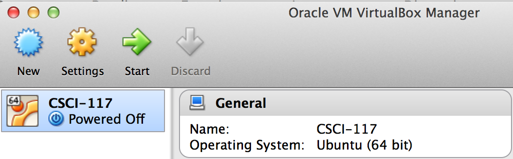
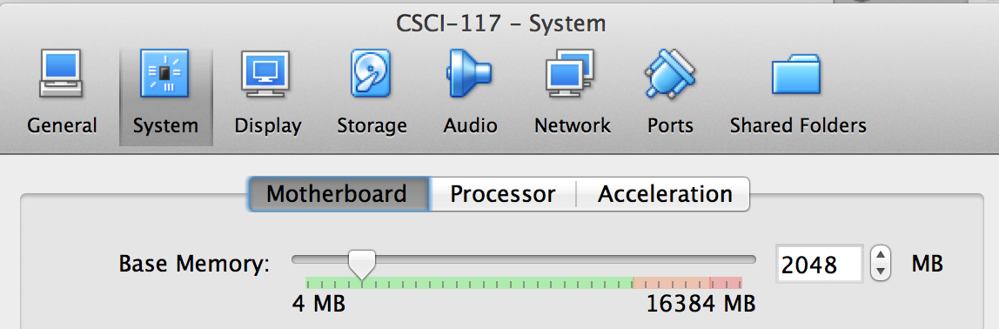
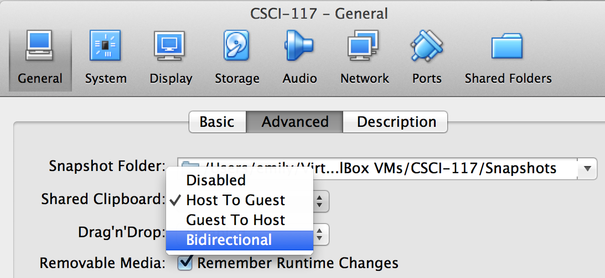

I have already setup a UNIX installation for you, but to use it, you need to set it up in Virtual Machine software such as Virtual Box or VMware player.
CSCI-150.ova (~2GB). Steps:
CSCI-150.ova has completed downloading (it should be about 2 GB), go to File > Import Appliance in VirtualBox. On VMWare Player, go to Open a Virtual Machine.CSCI-150.ova file on your computer, select open and then Import.Start on VirtualBox, Play virtual machine on VMware Player) to boot the UNIX machine. Note: If you get a VT-X error, you can either turn on virtualization through BIOS OR import the 32-bit version of the VM image in your Virtual Machine. See me during office hours for help.Devices > Insert Guest Additions CD image. (On VMware Player, this would be Player > Manage > Install VMware Tools, but it should already be installed.)You can also watch this screencast to install & setup your VirtualBox VM:
When you’re finished, you should shutdown your VM.
You have three choices of what to do with your VM state:
Save virtual machine state means the next time you resume, the VM will be exactly as you left it, like standby/resume on your host computer. Send shutdown signal will shut down the VM’s (guest) OS in an orderly way; your changes will be saved, but the next time you restart the VM, any programs that were running in the VM will have been shut down. This is like using the shutdown command on your host computer.Power off is like pulling the plug on the VM, and there is a risk that some data may be lost. This option is not recommended except as a last resort if the other options don’t work.Finally, you should customize your VirtualBox.
Hit the orange cog wheel labeled Settings in the main VirtualBox Window:

Go to System and add more base memory. At least 1024 MB is recommended, but no more than 25% of your total RAM (otherwise your host machine will be noticeably slower while the VM is running).

Next got to General > Advanced to enable a bidirectional shared clipboard:

This will allow you to copy/paste between your host computer and the virtual machine. Note: if you’re copying from or pasting to a terminal window within the VM then you should use Ctrl+Shift-C, Ctrl+Shift-V instead of the more usual Ctrl-C and Ctrl-V.
You can also enable Drag’n’Drop support to transfer files between your host computer and your VM.
A typical work session using the VirtualBox VM proceeds as follows:
Close from the VirtualBox Machine menu and shutdown using your preferred method (saved state or shutdown){kind=link}
{kind=link}
{kind=link}